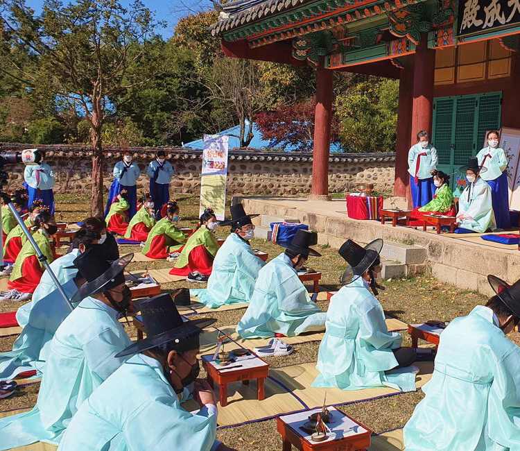

home > 전통행사 > 전통성년례
전통성년례
Coming of Age Ceremony
성인되는 출발점에서 성인이 되는 청소년들에게 자신을 자각할 수 있는 기회를 제공하고 성인으로서의 책임을 일깨우는 의식이며,
세상을 바르게 살아가기 위한 가르침을 주는데 그 참 뜻이 있습니다.
전통성년례의 의미
오늘날 성년례의 진정한 의미는 일정한 나이가 되면 법률적으로나 사회적으로 정당한 권리를 행사하고 신성한 의무를 지게 되므로 그 의식을 행함으로써 성인이 되는 출발점에서 성인이 되는 이들에게 자신을 자각할 수 있는 기회를 제공하고, 성인으로서의 의무와 책임을 일깨워 주며 더불어 청소년들에게 관례와 계례를 통해서 사람과 사람 사이의 관계와 관계성을 인지하는 기회를 주고 성인으로서의 자부심과 책임감 및 자긍심을 고취시킴과 아울러 세상을 바르게 살아가기 위한 가르침을 주고자 합니다.

전통성년례 주요실적
- 2013년 서초구 잠원동 제1회 전통성년례
- 2013년 구리시 전통성년례
- 2014년 이천시 전통성년례
- 2014년 서울상문고등학교 제1회 전통성년례
- 2015년 서초구 잠원동 제2회 전통성년례
- 2016년 이천시 전통성년례
- 2017년 의정부시 제1회 전통성년례
- 2020년 도봉구 제1회 전통성년례 (장비 및 소품대여)
- 2021년 경기도 이천시 전통성년례
- 2022년 경기도 이천시 전통성년례
- 2023년 경기도 이천시 전통성년례
- 2024년 국내 최초 발달장애청년 전통성년례
전통성년례 의식 절차
| 의례식순 | 전통성년례 (관례, 계례) |
|---|---|
| 빈 맞이(迎賓) | 빈을 맞이하는 의식 |
| 시가례(始加禮) | 어른의 출입복 입는 의식과 재가축사(再加祝詞) |
| 재가례(再加禮) | 어른의 출입복 입는 의식과 재가축사(再加祝詞) |
| 삼가례(三加禮) | 어른의 예복을 입는 의식과 삼가축사(三加祝詞) |
| 초례(醮禮) | 술을 마시는 의식과 내초축사(乃醮祝詞) |
| 빈 자관자례(賓 字冠者禮) | 자와 당호를 받는 의식과 자사축사(字辭祝詞) |